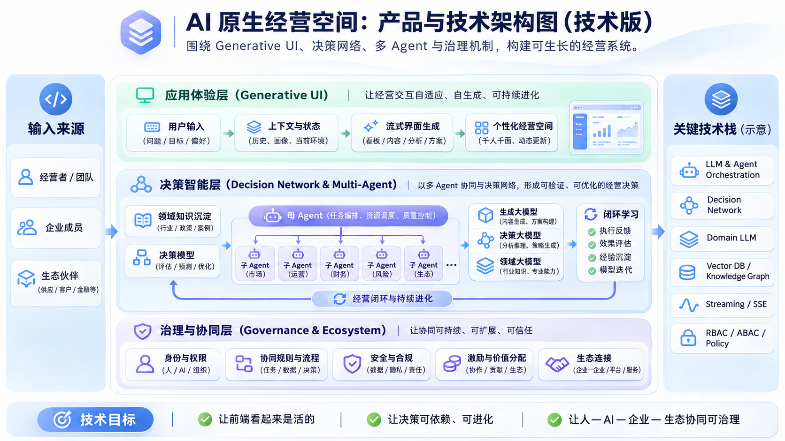

跳至本周进展
枢
决策中枢 · 你的数字经营空间
战略方向与产品进度看板
战略方向
本周进展
直接试用当前产品
往周记录
复制本周摘要
产品如何承载长期战略
产品与技术架构
当前技术架构示意 · 后续持续更新

架构图区已设置好，当前图片尚待上传。上传后会在这里显示。
技术架构示意图（2026年11月4日）。可点击打开大图，查看完整结构。
一路往前，也保留来时的判断
往周记录
原计划不被实际结果覆盖
查看截图
关闭 ×
本周摘要
关闭 ×
浏览器未允许自动复制，可选择下方文字复制。不会自动发送。
本页需要启用 JavaScript。内容未显示不代表没有待办或风险。